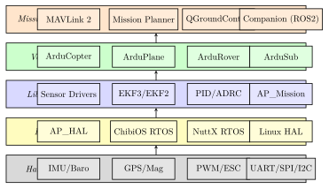
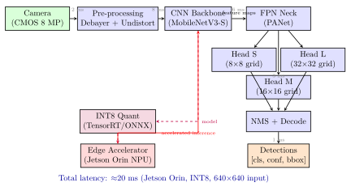

Chapter 10: Software, Autonomy and Artificial Intelligence¶
10.1 Introduction to UAV Software Architecture¶
The software stack of a modern unmanned aerial vehicle is among the most complex embedded systems in production engineering. It must concurrently execute hard real-time control loops at 400 Hz, run sensor fusion algorithms at 50–200 Hz, interface with heterogeneous hardware peripherals over a dozen bus protocols, support mission management logic, stream gigabytes of sensor data to onboard storage and downlinks, and increasingly, run deep neural network inference for real-time perception — all within severe constraints on mass (\(<200\) g compute node), power (\(<15\) W), and vibration, temperature, and EMI tolerance.
This chapter develops the full software stack from the hardware abstraction layer through flight control algorithms, mission planning, computer vision, SLAM, AI/ML inference, swarm coordination, simulation, cybersecurity, and airworthiness certification. Every subsystem is treated quantitatively, with reference to open-source implementations (ArduPilot, PX4, ROS2, ORB-SLAM3), academic literature, and military standards.
10.2 Flight Control Software Stack¶
10.2.1 ArduPilot Architecture¶
ArduPilot is the world’s most widely deployed open-source autopilot framework, with over one million vehicles flying on ArduPilot firmware as of 2024. Its architecture is structured into three tiers:
Tier 1 — Hardware Abstraction Layer (HAL). The AP_HAL namespace defines a pure-virtual C++ interface for every hardware resource: UART, I2C, SPI, PWM, ADC, storage, and scheduler. Platform-specific implementations (AP_HAL_ChibiOS for Pixhawk hardware running ChibiOS RTOS, AP_HAL_Linux for Raspberry Pi/Navio2, AP_HAL_SITL for software-in-the-loop simulation) inherit from AP_HAL::HAL and implement the virtual methods. This strict separation means that vehicle code (Copter, Plane, Rover, Sub) is portable across hardware without modification.
Tier 2 — Libraries. The libraries/ directory contains sensor drivers (AP_InertialSensor, AP_GPS, AP_Baro, AP_Compass), state estimators (AP_NavEKF3 — a 24-state extended Kalman filter), controllers (AC_PID, AC_AttitudeControl, AC_PosControl), and utilities (AP_Math, AP_AHRS, AP_Mission). The EKF3 state vector includes: position (3), velocity (3), attitude quaternion (4), IMU bias (6), earth magnetic field (3), and body magnetic field (3), plus optional wind velocity (3) and terrain height (1).
Tier 3 — Vehicle code. ArduCopter/, ArduPlane/, etc. define the top-level vehicle loop (loop()/fast_loop() structure), flight mode FSM, and vehicle-specific control mixing.
The ArduPilot scheduler runs tasks at fixed rates using a cooperative scheduler built on the HAL timer. Each task has a declared period and maximum execution time (budget):
where \(C_i\) is worst-case execution time and \(T_i\) is period of task \(i\). ArduPilot’s fast loop (400 Hz, \(T = 2.5\) ms) executes attitude control and motor output with a budget of \(<400\) µ s, leaving headroom for medium (50 Hz) and slow (10 Hz) tasks.
10.2.2 PX4 Architecture and uORB Middleware¶
PX4 Autopilot uses a fundamentally different architecture centred on the uORB (Micro Object Request Broker) publish-subscribe middleware. Modules communicate exclusively by publishing to and subscribing from named message topics (defined as .msg files), with no direct function calls between modules. This enforces modularity and testability.
Each module runs as an independent NuttX (RTOS) task or workqueue callback, publishing its outputs at a defined rate. Key modules:
-
sensors: reads and calibrates all IMU, barometer, magnetometer; publishessensor_combined -
ekf2: 23-state iterated EKF; subscribessensor_combined, publishesvehicle_odometry,estimator_status -
mc_att_control: multi-copter attitude controller; subscribesvehicle_attitude_setpoint, publishesactuator_controls -
mc_pos_control: position/velocity controller; publishes attitude setpoints -
commander: flight mode FSM, arming logic, health monitoring -
navigator: waypoint sequencing, geofence enforcement -
mavlink: MAVLink protocol bridge to GCS
The uORB layer implements lock-free single-producer multi-consumer queues with priority-based semaphore signalling. Publication latency is \(<10\) µ s on NuttX; copy overhead for a 256-byte message is \(<5\) µ s.
10.2.3 RTOS Fundamentals for Flight Control¶
Real-Time Operating Systems used in flight control (NuttX, ChibiOS, FreeRTOS, VxWorks) implement preemptive priority-based scheduling. The rate-monotonic scheduling (RMS) algorithm assigns priorities inversely proportional to period; for \(N\) periodic tasks, the CPU utilisation bound for guaranteed schedulability is:
The deadline monotonic scheduling (DMS) algorithm extends RMS to tasks with deadlines \(D_i < T_i\). Worst-case response time analysis (WCRT) for task \(i\):
where \(\mathcal{H}(i)\) is the set of tasks with higher priority than \(i\). Convergence is achieved when \(R_i^{(n+1)} = R_i^{(n)}\). For flight control, the attitude control task at 400 Hz (\(T = 2.5\) ms) requires \(R_\mathrm{attitude} < 2.5\) ms; WCRT analysis with ChibiOS interrupt latency and context switch time (\(<10\) µ s) confirms feasibility.
Interrupt latency is the delay from hardware interrupt assertion to first instruction of the ISR. With a Cortex-M7 at 480 MHz, interrupt latency is 12 cycles \(= 25\) ns, satisfying even microsecond-level timing requirements.
10.2.4 Middleware: ROS and microROS¶
The Robot Operating System (ROS2) provides a full-featured middleware layer above the RTOS, using the DDS (Data Distribution Service) standard for IPC. ROS2 nodes communicate via topics (publish/subscribe), services (request/reply), and actions (goal/result/feedback). The quality-of-service (QoS) settings (reliability, durability, deadline) allow tuning for real-time applications.
microROS ports the ROS2 client library to microcontrollers (\(<1\) MB RAM) running bare-metal or RTOS, using the micro-XRCE-DDS transport to bridge UART/USB to a ROS2-enabled host computer. This allows a Cortex-M4 flight controller to appear as a ROS2 node, publishing sensor_msgs/Imu and subscribing to geometry_msgs/TwistStamped setpoints — a common pattern for integrating PX4 with a companion computer running ROS2 mission logic.
10.2.5 Software-in-the-Loop and Hardware-in-the-Loop Simulation¶
SITL runs the full autopilot firmware binary (ArduPilot or PX4) on a Linux host with a simulated flight dynamics model (JSBSim for fixed-wing, MultiRotor dynamics for copters). The firmware receives simulated sensor data and outputs actuator commands to the dynamics model, forming a closed simulation loop:
where \(\mathbf{x}\) is the flight dynamics state (position, velocity, attitude, angular rates), \(\mathbf{u}\) is the actuator command vector, and \(\mathbf{w}\) is environmental disturbance (wind, turbulence). SITL enables regression testing of mission planning logic, geofence enforcement, failsafe behaviours, and navigation algorithms without hardware risk.
HITL uses real autopilot hardware but injects simulated sensor data via the hardware’s serial ports, exercising the firmware on real silicon to test timing behaviour and hardware-dependent code paths. HITL is mandatory before first flights of new firmware on new hardware.
10.3 Mission Planning Software¶
10.3.1 MAVLink Mission Protocol¶
MAVLink is the de-facto standard lightweight messaging protocol for UAV ground control. Version 2 (MAVLink 2.0) provides a 14-byte header with 24-bit message ID space and optional signing. Mission commands follow the MAV_CMD namespace (Table 10.1).
| Command ID | Name | Parameters |
|---|---|---|
| 16 | NAV_WAYPOINT | Hold time (s), acceptance radius (m), pass-through, yaw (°), lat, lon, alt |
| 17 | NAV_LOITER_UNLIM | Radius (m), yaw, lat, lon, alt |
| 18 | NAV_LOITER_TURNS | Turns, radius, lat, lon, alt |
| 19 | NAV_LOITER_TIME | Time (s), radius, lat, lon, alt |
| 20 | NAV_RETURN_TO_LAUNCH | — |
| 21 | NAV_LAND | Abort alt (m), land mode, lat, lon, yaw |
| 22 | NAV_TAKEOFF | Min pitch, yaw, lat, lon, alt |
| 93 | NAV_DELAY | Delay (s), hour, minute, second |
| 177 | DO_SET_SERVO | Servo number, PWM value |
| 178 | DO_REPEAT_SERVO | Servo, PWM, repeat count, delay (s) |
| 181 | DO_DIGICAM_CONTROL | On/off, zoom step, zoom pos, focus lock, shot, command ID |
| 201 | DO_SET_ROI | ROI mode, WP index, ROI index, lat, lon, alt |
The MAVLink mission upload sequence: GCS sends MISSION_COUNT (total items); UAV acknowledges; GCS sends each MISSION_ITEM_INT (integer lat/lon in \(10^{-7}\) degrees for precision); UAV ACKs each item; GCS sends MISSION_ACK. The current waypoint index is broadcast in heartbeat telemetry.
10.3.2 Path Planning Algorithms¶
A* Algorithm: Finds the minimum-cost path from start node \(s\) to goal \(g\) in a graph. The heuristic evaluation function:
where \(g(n)\) is the known cost from \(s\) to node \(n\), and \(h(n)\) is an admissible heuristic estimate of cost from \(n\) to \(g\). For grid-based obstacle maps, the Euclidean distance heuristic \(h(n) = \|n - g\|_2\) is admissible (never overestimates). A* is optimal and complete when \(h\) is admissible and consistent.
Rapidly-exploring Random Tree (RRT): A sampling-based planner that builds a tree by random sampling of the configuration space. At each iteration, a random point \(q_\mathrm{rand}\) is sampled; the nearest tree node \(q_\mathrm{near}\) is extended by step \(\delta\) toward \(q_\mathrm{rand}\):
If \(q_\mathrm{new}\) is collision-free, it is added to the tree. RRT* adds a rewiring step that asymptotically converges to the optimal path:
Minimum-Snap Trajectory for quadrotors: The minimum-snap formulation minimises the integral of snap (4th derivative of position) to produce smooth, dynamically feasible trajectories. For a segment from \(t_0\) to \(t_f\), position is represented as a degree-7 polynomial:
The cost functional:
is minimised subject to boundary conditions (position, velocity, acceleration, jerk at waypoints). This yields a quadratic programme (QP) that can be solved efficiently with standard QP solvers (OSQP, qpOASES).
10.4 Computer Vision for UAVs¶
10.4.1 Image Processing Pipeline¶
The standard computer vision pipeline for a UAV perception system consists of:
-
Capture and synchronisation: Hardware trigger synchronises camera frame with IMU timestamp (\(<1\) µ s accuracy); rolling shutter correction requires IMU interpolation.
-
Preprocessing: Debayering (Malvar-He-Cutler algorithm for \(3\times\) faster vs bilinear with less aliasing); lens distortion correction using calibrated \(\mathbf{K}\) intrinsic matrix and \((k_1, k_2, p_1, p_2, k_3)\) distortion coefficients.
-
Feature extraction or detection inference.
-
Downstream task: Detection, tracking, segmentation, depth estimation, or flow.
Camera calibration: the projection of a 3D point \(\mathbf{P}_w = [X, Y, Z]^T\) in world frame to pixel \(\mathbf{p} = [u, v]^T\):
where \(f_x, f_y\) are focal lengths in pixels, \((c_x, c_y)\) is the principal point, and \([\mathbf{R}|\mathbf{t}]\) is the extrinsic pose (rotation and translation from world to camera).
10.4.2 Classical Feature Descriptors¶
SIFT (Scale-Invariant Feature Transform): Detects keypoints at scale-space extrema of the DoG (Difference of Gaussians). Descriptor: 128-dimensional histogram of gradient orientations over \(4\times4\) sub-regions. SIFT is robust to scale and rotation but computationally expensive (patented until 2020, now free).
ORB (Oriented FAST and Rotated BRIEF): Combines FAST corner detector (intensity threshold comparison on a Bresenham circle) with BRIEF descriptor (binary comparison of pixel pairs at a learned sampling pattern). ORB is rotation-invariant (orientation computed from intensity centroid) and 100\(\times\) faster than SIFT at comparable matching precision, making it the standard for real-time mobile and UAV applications.
The optical flow (Lucas-Kanade) algorithm estimates pixel displacement \(\mathbf{v} = [v_x, v_y]^T\) between frames by solving the brightness constancy equation:
In a local window of \(N\) pixels, the least-squares solution is:
The \(2\times2\) matrix (the Harris matrix \(\mathbf{M}\)) must be well-conditioned — the minimum eigenvalue \(\lambda_\mathrm{min} > \tau\) ensures reliable flow (Harris corner condition).
10.4.3 Deep Learning Object Detection¶
The YOLO (You Only Look Once) family of detectors has become the default for onboard UAV inference due to its single-forward-pass architecture. YOLOv8 processes an input image in a single pass through a convolutional backbone (CSPDarknet), neck (PAN-FPN), and detection head.
The detection output for each grid cell \((i,j)\) and anchor \(k\) is a tensor:
where \((t_x, t_y)\) are box centre offsets relative to cell, \((t_w, t_h)\) are log-scale width/height relative to anchor, \(p_\mathrm{obj}\) is objectness score, and \(p_c\) are class probabilities. Decoded bounding box coordinates:
where \((c_x, c_y)\) are grid cell offsets and \((a_w, a_h)\) are anchor dimensions.
The multi-task loss function:
where \(\mathcal{L}_\mathrm{box}\) is CIoU (Complete IoU) loss, \(\mathcal{L}_\mathrm{obj}\) is binary cross-entropy on objectness, and \(\mathcal{L}_\mathrm{cls}\) is cross-entropy on class probabilities. Mean Average Precision (mAP) at IoU threshold 0.5 (mAP@0.5) is the standard benchmark metric.
Representative performance on VisDrone dataset (small object detection): YOLOv8-nano: 18.4 mAP@0.5, 3.2 ms inference (Jetson Orin); YOLOv8-x: 36.2 mAP@0.5, 28 ms inference (Jetson Orin).
10.4.4 Multi-Object Tracking¶
SORT (Simple Online and Real-time Tracking) combines Kalman filter prediction with IoU-based Hungarian assignment. The Kalman state for each track is \(\mathbf{x} = [u, v, s, r, \dot{u}, \dot{v}, \dot{s}]^T\) where \((u,v)\) is box centre, \(s\) is area, \(r = w/h\) is aspect ratio (assumed constant). Prediction:
Update with detection \(\mathbf{z}_k\) (4-element bounding box vector):
The Hungarian algorithm solves the minimum-cost bipartite matching between \(M\) existing tracks and \(N\) detections in \(O(\max(M,N)^3)\) time. IoU is used as the cost (affinity) metric; tracks with IoU \(<0.3\) are rejected.
DeepSORT augments SORT with a CNN-based appearance descriptor (128-dimensional), using Mahalanobis distance for Kalman-gate filtering and cosine distance in appearance embedding space for track association, dramatically reducing ID switches in crowded scenes.
10.5 Simultaneous Localisation and Mapping (SLAM)¶
10.5.1 Feature-Based Visual SLAM: ORB-SLAM3¶
ORB-SLAM3 is the state-of-the-art monocular, stereo, and RGB-D visual SLAM system. Its architecture divides into three parallel threads:
-
Tracking: Extracts ORB features; matches to local map; estimates camera pose using EPnP + RANSAC (Perspective-n-Point):
\[\mathbf{T}_\mathrm{cw} = \arg\min_{\mathbf{T}} \sum_i \rho\!\left(\left\| \mathbf{p}_i - \pi\!\left(\mathbf{T} \mathbf{P}_i\right) \right\|^2\right)\tag{10.23}\]where \(\pi(\cdot)\) is the camera projection, \(\rho(\cdot)\) is a robust (Huber) loss.
-
Local mapping: Triangulates new map points from new keyframes; runs local Bundle Adjustment (BA) optimising a window of recent keyframes and their observed map points.
-
Loop closing: Detects revisited locations using DBoW2 (Bag-of-Words); performs global BA to correct accumulated drift.
Bundle Adjustment minimises the total reprojection error:
over all keyframes \(\mathcal{K}\) and their observed map points \(\mathcal{P}_i\). Gauss-Newton or Levenberg-Marquardt solves this large sparse nonlinear least-squares problem; g2o and Ceres Solver are the standard back-ends.
10.5.2 LiDAR SLAM: LIO-SAM¶
LIO-SAM (LiDAR-Inertial Odometry via Smoothing and Mapping) tightly couples LiDAR scan matching with IMU preintegration in a factor graph framework. The factor graph has four factor types:
-
IMU preintegration factors: Integrate IMU measurements between keyframes into a compact preintegrated measurement \(\Delta\mathbf{R}, \Delta\mathbf{v}, \Delta\mathbf{p}\) with associated covariance.
-
LiDAR odometry factors: Estimate relative pose between consecutive LiDAR scans using NDT (Normal Distribution Transform) or LOAM feature matching.
-
GPS factors: Absolute position constraints from RTK GPS.
-
Loop closure factors: Geometric verification of revisited locations using ICP.
The maximum-a-posteriori (MAP) estimate of the pose trajectory \(\mathcal{X} = \{T_0, T_1, …, T_n\}\) is found by minimising:
where \(\mathbf{r}_k\) are residuals and \(\boldsymbol{\Sigma}_k\) are covariance matrices for each factor. GTSAM (Georgia Tech Smoothing and Mapping) solves this using iSAM2 (incremental smoothing), which maintains a Bayes tree and updates only affected nodes on each new measurement.
10.5.3 Visual-Inertial Odometry¶
VINS-Mono achieves metric-scale pose estimation from a monocular camera and IMU by exploiting the IMU for scale. The IMU preintegration between times \(t_i\) and \(t_j\) yields:
where \(\mathbf{a}_\tau\) is IMU accelerometer measurement (with bias subtracted) and \(\mathbf{g}\) is gravity. The residual of the IMU factor:
is optimised jointly with visual reprojection residuals in a sliding window nonlinear optimiser.
10.6 Autonomy Levels and Decision Making¶
10.6.1 Autonomy Level Frameworks¶
STANAG 4586 defines ten levels of autonomy (LOA) for UAV human-machine interaction, from LOA 1 (remotely piloted) through LOA 10 (fully autonomous, no human in/on loop). The US Air Force Research Laboratory (AFRL) Autonomous Control Levels (ACL) provide a parallel ten-level hierarchy focused on control functions. For a full taxonomy, see Chapter 2.
10.6.2 Behaviour Trees¶
Behaviour Trees (BTs) have emerged as the preferred architectural pattern for UAV mission logic, superseding hierarchical FSMs in most modern robotics systems (PX4 Navigator, Dronecode Mission BT, BT.cpp library). A BT is a rooted tree where:
-
Control flow nodes: Sequence (runs children left-to-right, returns SUCCESS only if all succeed), Fallback/Selector (runs children left-to-right, returns SUCCESS on first child success), Parallel (runs all children simultaneously).
-
Execution nodes: Condition (evaluates a predicate, SUCCESS/FAILURE), Action (executes a task, returns RUNNING/SUCCESS/FAILURE).
-
Decorator nodes: Modify the return status or control flow of a child (Retry, Inverter, ForceSuccess).
The BT is ticked at a fixed rate (10–50 Hz). Each tick traverses the tree from root. The status propagation follows:
The BT.cpp library (Davide Faconti, MIT licence) implements BTs with reactive event handling, blackboard memory, and XML tree loading, and is used in DJI, ArduPilot, and academic SLAM robots.
10.6.3 Reinforcement Learning for Drone Control¶
Reinforcement Learning (RL) trains a control policy \(\pi_\theta(\mathbf{a}|\mathbf{s})\) (parameterised by neural network weights \(\theta\)) to maximise cumulative discounted reward:
where \(\gamma \in (0,1)\) is the discount factor and \(r(\mathbf{s}_t, \mathbf{a}_t)\) is the reward at step \(t\). Proximal Policy Optimisation (PPO) updates the policy using a clipped surrogate objective to limit step size:
where \(r_t(\theta) = \pi_\theta(\mathbf{a}_t|\mathbf{s}_t) / \pi_{\theta_\mathrm{old}}(\mathbf{a}_t|\mathbf{s}_t)\) is the probability ratio and \(\hat{A}_t\) is the generalised advantage estimate. PPO is used for quadrotor aggressive manoeuvre learning (Kaufmann et al., 2023 — RL policy exceeding human champion lap times in drone racing), agile perching, and wind-disturbance rejection.
The reward shaping for UAV navigation typically includes:
where \(c_t = 1\) if collision occurred, \(\boldsymbol{\omega}_t\) is angular velocity (penalising aggressive attitude), and \(d_\mathrm{progress}\) is progress toward goal (sparse reward augmentation).
10.7 Machine Learning for UAV Applications¶
10.7.1 Neural Network Architectures for Onboard Inference¶
Airborne ML inference must balance accuracy against strict latency (\(<50\) ms for detection) and power (\(<15\) W) constraints. The dominant architecture families:
MobileNetV3 (Howard et al., 2019): depthwise separable convolutions reduce FLOPs by a factor \(\approx 1/(k^2)\) vs standard convolutions for kernel size \(k\). For a \(3\times3\) depthwise separable conv:
where \(N\) is the number of output channels (typically 256–512). MobileNetV3-Small achieves 67.4% top-1 accuracy on ImageNet at 56 ms on Cortex-A72, 0.60 B FLOPs.
EfficientNet scales width, depth, and resolution with compound coefficient \(\phi\):
Vision Transformer (ViT) and DeiT: For larger onboard processors (Jetson Orin), transformer-based backbones provide state-of-the-art accuracy. The self-attention operation for sequence length \(N\) has \(O(N^2)\) complexity, motivating efficient variants (Swin Transformer, DETR with spatial reduction).
10.7.2 Edge AI Hardware for UAVs¶
Table 10.2 compares the principal edge inference accelerators used in UAV companion computers.
| Module | Architecture | TOPS | Power | Mass | INT8 BW |
| (W) | (g) | (GB/s) | |||
| NVIDIA Jetson Nano | 128-core Maxwell + 4-core A57 | 0.5 | 5–10 | 140 | 25.6 |
| NVIDIA Jetson Xavier NX | 384-core Volta + 6-core Carmel | 21 | 10–20 | 70 | 51.2 |
| NVIDIA Jetson Orin NX | 1024-core Ampere + 8-core Cortex-A78 | 100 | 10–25 | 60 | 102.4 |
| NVIDIA Jetson AGX Orin | 2048-core Ampere + DLA \(\times2\) | 275 | 15–60 | 120 | 204.8 |
| Google Coral USB | Edge TPU (8-bit only) | 4 | 2.5 | 14 | — |
| Intel Myriad X | 16\(\times\) SHAVE + NN engine | 4 | 1–4 | — | — |
| Hailo-8 | Dataflow processor | 26 | 2.5 | — | — |
| Hailo-8L | Dataflow processor | 13 | 1.5 | — | — |
| Qualcomm QCS8550 | Hexagon NPU | 18 | 5–15 | — | — |
10.7.3 Model Compression for Deployment¶
Post-training quantisation (PTQ): Converts FP32 weights and activations to INT8 using a calibration dataset. Weight quantisation error:
where \(b\) is the bit-width. For INT8 (\(b=8\)), the step size \(\Delta w\) introduces quantisation noise with variance \(\sigma^2 \approx \Delta w^2/12\). Quantisation-aware training (QAT) simulates INT8 quantisation during training (straight-through estimator for gradients), recovering 1–2% accuracy vs PTQ.
Structured pruning: Removes entire convolutional filters with lowest \(L_1\)-norm. After pruning fraction \(p\) of filters in a layer, inference FLOPs reduce by approximately \(p\) for that layer. Fine-tuning after pruning recovers accuracy:
Knowledge Distillation: A large teacher model \(f_T\) supervises a small student model \(f_S\) using soft targets (softened logits):
where \(\tau\) is the temperature (typical value 4–10), \(\mathbf{z}\) are logits before softmax, and \(\alpha \in [0,1]\) balances hard and soft targets. Distillation typically achieves 80% of teacher accuracy with 10\(\times\) fewer parameters.
10.7.4 Federated Learning for Swarm Applications¶
Federated learning (FL) enables distributed model training across a UAV swarm without sharing raw sensor data, addressing both bandwidth and privacy constraints. In the FedAvg algorithm, each drone \(i\) trains a local model \(\theta_i\) on local data \(\mathcal{D}_i\) for \(E\) local epochs, then sends only model weights (not data) to an aggregator:
The aggregated global model is broadcast back to all drones. Challenges for airborne FL: non-IID data distributions (each drone observes different terrain), communication link dropouts, and heterogeneous compute capability across swarm nodes.
10.8 Swarm Intelligence¶
A full treatment of swarm systems is provided in Chapter 11. The following summarises the key algorithms.
10.8.1 Reynolds’ Flocking Rules¶
Craig Reynolds’ three rules for emergent flocking behaviour in a continuous agent:
The composite velocity command: \(\mathbf{v}_i = w_s \mathbf{v}_\mathrm{sep,i} + w_a \mathbf{v}_\mathrm{ali,i} + w_c \mathbf{v}_\mathrm{coh,i}\).
10.8.2 Consensus and Task Allocation¶
Average consensus converges the states of all agents to the group mean. The Laplacian consensus protocol for agent \(i\) with state \(x_i\):
where \(a_{ij}\) is the weight of edge \((i,j)\) in the communication graph. In matrix form: \(\dot{\mathbf{x}} = -\mathbf{L}\mathbf{x}\), where \(\mathbf{L}\) is the graph Laplacian. Convergence rate is determined by \(\lambda_2(\mathbf{L})\) (the algebraic connectivity or Fiedler eigenvalue) — larger \(\lambda_2\) gives faster consensus.
The Consensus-Based Bundle Algorithm (CBBA) for multi-UAV task allocation iterates between bundle construction (greedy addition of highest-value task to each agent’s bundle) and consensus (resolving conflicts through bid comparison), converging to a conflict-free assignment in at most \(n-1\) communication rounds for \(n\) agents.
10.9 Simulation Environments¶
10.9.1 Gazebo and ROS2 Integration¶
Gazebo (now gz-sim, Ignition) is an open-source 3D robotics simulator using ODE/Bullet/DART physics engines. Key capabilities for UAV simulation:
-
Aerodynamics plugin: lift, drag, angular damping forces on surfaces
-
IMU, GPS, barometer, camera, LiDAR sensor plugins with configurable noise models
-
ROS2-gz bridge: bidirectional topic bridging between Gazebo topics and ROS2
-
Multi-vehicle support: simulate swarms of 10–100 vehicles (performance-limited)
Sensor noise models: Gaussian additive noise on IMU (\(\sigma_\mathrm{acc} = 0.01\) m/s\(^2\), \(\sigma_\mathrm{gyro} = 0.001\) rad/s in SITL defaults). Real-time factor (RTF) \(= \mathrm{sim\ time} / \mathrm{wall\ time}\); for a quadrotor at 400 Hz control rate, RTF \(\approx 1.0\) on a modern CPU.
10.9.2 Microsoft AirSim and Unreal Engine¶
AirSim (Aerial Informatics and Robotics Simulation, Microsoft Research) renders photorealistic environments via Unreal Engine 4/5, providing high-fidelity camera, depth, and IMU data. Key features:
-
Multirotor and fixed-wing vehicle physics (simplified aerodynamics, not FDM-accurate)
-
Python/C++ API:
client.moveToPositionAsync(),client.simGetImages() -
Domain randomisation support for training ML models transferable to real hardware
-
Multi-rotor wind and turbulence injection
The sim-to-real (sim2real) transfer gap is addressed through domain randomisation of visual appearance, lighting, sensor noise parameters, and vehicle dynamics within SITL/AirSim, training models robust to distributional shift.
10.9.3 Digital Twin Architecture¶
A digital twin of a UAV synchronises a real-time simulation model with telemetry from the physical aircraft, enabling predictive health monitoring and in-flight mission replanning. The synchronisation residual:
is used to update model parameters (e.g., estimated battery degradation, motor wear coefficient) via a recursive least-squares or UKF parameter estimator. When \(\|\boldsymbol{\varepsilon}_\mathrm{twin}\| > \epsilon_\mathrm{threshold}\), a fault is flagged and adaptive replanning initiated.
10.10 Cybersecurity for UAS Software¶
10.10.1 UAS Attack Surface¶
The UAS communication and computation architecture presents multiple attack surfaces:
-
RC link (2.4 GHz/5.8 GHz): DSM2/DSMX, SBUS, CRSF — unencrypted in legacy systems; vulnerable to replay and injection.
-
Telemetry (900 MHz/2.4 GHz): MAVLink typically transmitted in plaintext; trivially interceptable with SDR.
-
GPS: Civil GPS signals (L1 C/A) are unauthenticated; vulnerable to spoofing (false GPS signal injection); jamming with \(<1\) W within 10 km.
-
GCS software: Mission Planner, QGC have had SQL injection and XML parsing vulnerabilities; dependency supply-chain risks.
-
Onboard computer: If running embedded Linux, exposed to network-layer attacks via Ethernet or WiFi; privilege escalation, rootkit injection.
-
Payload data link: STANAG 4609/7023 downlinks often unencrypted in legacy systems (Global Hawk early variants had unencrypted video feeds intercepted by insurgents in Iraq, 2008).
10.10.2 Secure Boot and Code Signing¶
Secure boot ensures only authorised firmware executes on the flight controller. The chain of trust:
-
ROM bootloader (burned into silicon, immutable): verifies signature of Stage 1 bootloader using manufacturer public key in OTP fuses.
-
Stage 1 bootloader: verifies signature of Stage 2 / RTOS image.
-
RTOS: verifies signatures of application modules before loading.
ECDSA-256 (elliptic curve digital signature algorithm over P-256) provides 128-bit security with 32-byte signatures and is computationally feasible on Cortex-M7 (\(<1\) ms verify time). The signature verification:
Firmware update packages are signed by the OEM’s private key; any tampered or unofficial firmware is rejected at boot.
10.10.3 GPS Spoofing Detection¶
GPS spoofing injects counterfeit GPS signals to mislead the receiver’s position solution. Detection methods:
-
Receiver Autonomous Integrity Monitoring (RAIM): Cross-checks pseudo-range measurements across redundant satellites; detects gross errors (\(>50\) m) but not sophisticated spoofing.
-
IMU/GPS consistency check: The INS-propagated position \(\hat{\mathbf{p}}_\mathrm{INS}\) diverges from the GPS position \(\mathbf{p}_\mathrm{GPS}\) when GPS is spoofed (IMU drift rate \(<1\) m/min for tactical IMU). The Mahalanobis distance:
A threshold \(d_M > \chi^2_{0.95}(3)\) (chi-squared with 3 DOF at 95% confidence, \(\approx 7.81\)) triggers a spoofing alert.
-
Multi-antenna carrier phase monitoring: Sudden changes in carrier phase differences between closely-spaced antennas indicate a spoofed signal.
-
Signal power monitoring: A spoofed signal typically has higher power than genuine satellite signals, detectable as anomalous AGC (automatic gain control) shift.
10.10.4 MAVLink Protocol Security¶
MAVLink 2 introduced optional signing (authentication) using a shared 48-bit link ID and 64-bit timestamp. The HMAC-SHA256 truncated to 48 bits is appended to each message:
Replay attacks are mitigated by the monotonically increasing 48-bit timestamp; messages with timestamp below the highest received value are rejected. However, signing is optional and rarely enabled in practice for ground-to-UAV links due to latency overhead. Encrypted tunnelling (TLS over TCP, or WireGuard VPN) is the recommended approach for mission-critical GCS links.
10.11 Software Certification and Airworthiness¶
10.11.1 DO-178C Software Assurance¶
DO-178C (Software Considerations in Airborne Systems and Equipment Certification) is the FAA/EASA-accepted means of compliance for airborne software. It defines five software levels (Design Assurance Levels, DAL) based on the severity of failure conditions:
| Level | Failure Condition | Probability | Key Requirements |
|---|---|---|---|
| A | Catastrophic | \(<10^{-9}\)/hr | Full structural coverage (MC/DC); independence between development and verification; formal methods supplement |
| B | Hazardous | \(<10^{-7}\)/hr | Decision and condition coverage; independent review of all artefacts |
| C | Major | \(<10^{-5}\)/hr | Statement and decision coverage; software verification procedures |
| D | Minor | \(<10^{-3}\)/hr | Independence at system level; limited software review |
| E | No Effect | — | No requirements (unrelated to safety) |
The DO-178C lifecycle generates the following mandatory artefacts:
-
PSAC (Plan for Software Aspects of Certification)
-
SDP/SVP/SCMP/SQAP (Software Development, Verification, Configuration Management, Quality Assurance Plans)
-
SRS/SDS (Software Requirements/Design Standards)
-
Source code with traceability from requirements through design to code to test cases
-
Test cases and procedures with structural coverage evidence (gcov/bullseye for statement coverage; MC/DC requires specialised tools: LDRA, VectorCAST, PRQA QA-C)
Modified Condition/Decision Coverage (MC/DC): Each condition in a Boolean expression must independently affect the expression outcome. For an expression with \(N\) conditions, MC/DC requires at minimum \(N+1\) test cases (vs \(2^N\) for full truth table coverage). This makes Level A certification tractable for large codebases.
10.11.2 DO-254 Hardware Assurance¶
DO-254 (Design Assurance Guidance for Airborne Electronic Hardware) applies the same DAL hierarchy to FPGAs, ASICs, and PCBs. For a Level A FPGA (e.g., an FPGA-based flight control computer), the following are required:
-
Formal verification of HDL logic (model checking with Cadence JasperGold)
-
Exhaustive gate-level simulation with fault injection
-
Traceability from hardware requirements through RTL to netlist to implementation
-
Environmental stress testing (RTCA DO-160G: temperature, vibration, humidity, EMI)
10.11.3 EASA SORA and SAIL Levels¶
EASA’s Specific Operations Risk Assessment (SORA) framework quantifies UAS operation risk using a Safety Risk Matrix (SRM) combining Air Risk Class (ARC) and Ground Risk Class (GRC). The resulting SAIL (Specific Assurance and Integrity Level, 1–6) determines the set of Operational Safety Objectives (OSOs) required:
SAIL VI (highest) requires robust command and control link (TLOS7), detect-and-avoid capability meeting ASTM F3442, and DAL B or higher for safety-critical software — effectively demanding near-DO-178C compliance for commercial BVLOS operations over populated areas.
10.11.4 Open-Source Autopilots in Certified Applications¶
Using ArduPilot or PX4 in certified applications presents specific challenges:
-
Traceability: Open-source codebases typically lack requirements-to-code-to-test traceability artefacts required by DO-178C. Third-party vendors (Dronecode Foundation partners, Auterion) have developed proprietary certified wrappers.
-
Configuration management: Git-based VCS is acceptable; specific hash-pinned releases must be documented; modifications require re-regression testing.
-
Tool qualification: GCC compiler must be qualified (DO-178C tool qualification or code inspection to verify absence of compiler-introduced errors). LLVM/Clang has published tool qualification artefacts.
-
Military use: Many national defence authorities accept STANAG 4671 (UAV airworthiness requirements) rather than full DO-178C, with less stringent MC/DC coverage requirements at lower consequence levels.
10.12 Software Architecture Block Diagrams¶


10.13 SLAM and State Estimation Algorithm Comparison¶
Table 10.4 provides a quantitative comparison of the leading open-source SLAM and visual-inertial odometry systems evaluated for UAV deployment, assessed on the EuRoC MAV benchmark dataset (ASL ETH Zurich, sequences V1_01 to MH_05).
| System | Sensor | Method | RMSE | CPU | Memory | Licence |
| (cm) | (cores) | (MB) | ||||
| ORB-SLAM3 (mono-inertial) | Mono + IMU | Feature BA | 3.5 | 3 | 180 | GPLv3 |
| ORB-SLAM3 (stereo-inertial) | Stereo + IMU | Feature BA | 1.8 | 3 | 220 | GPLv3 |
| VINS-Mono | Mono + IMU | Sliding window NLS | 5.1 | 2 | 120 | GPLv3 |
| VINS-Fusion (stereo) | Stereo + IMU | Sliding window NLS | 2.3 | 2 | 150 | GPLv3 |
| MSCKF (EKF-based) | Stereo + IMU | Multi-state EKF | 6.8 | 1 | 40 | BSD |
| OpenVINS | Mono/Stereo + IMU | Factor graph | 3.9 | 2 | 90 | GPLv3 |
| LIO-SAM (LiDAR+IMU) | LiDAR + IMU | Factor graph | 1.2 | 4 | 350 | BSD |
| LOAM / LeGO-LOAM | LiDAR only | Feature matching | 4.5 | 3 | 280 | BSD |
| Cartographer (2D) | LiDAR + IMU | Pose graph | 3.0 | 2 | 200 | Apache 2.0 |
| RMSE: root mean square translation error on EuRoC MH_01/02 (easy) sequences; CPU: approximate thread usage. | ||||||
10.14 Integrated Software Performance Summary¶
| Task / Module | Rate | Period | WCET | CPU | Notes |
| (Hz) | (ms) | (ms) | (%) | ||
| IMU read + calibrate | 400 | 2.50 | 0.05 | 2.0 | SPI DMA |
| Attitude control (inner loop) | 400 | 2.50 | 0.10 | 4.0 | Cortex-M7 |
| EKF3 prediction step | 400 | 2.50 | 0.15 | 6.0 | CMSIS-DSP SIMD |
| EKF3 GPS fusion | 10 | 100 | 0.50 | 0.5 | |
| Position + velocity control | 50 | 20 | 0.40 | 2.0 | |
| Mission sequencer | 10 | 100 | 0.20 | 0.2 | |
| MAVLink Tx/Rx | 10 | 100 | 0.30 | 0.3 | |
| Obstacle avoidance | 10 | 100 | 0.80 | 0.8 | Companion CPU |
| FCS total | \(\approx\)16 | ||||
| SLAM front-end (visual odometry) | 30 | 33 | 8 | — | Cortex-A78 |
| Object detection (YOLOv8-nano) | 20 | 50 | 18 | — | Jetson Orin NPU |
| Video encoding (H.265) | 30 | 33 | 5 | — | Hardware encoder |
| Mission logic (BT tick) | 10 | 100 | 2 | — | Cortex-A78 |
| Datalink management | 10 | 100 | 1 | — | |
| Companion total (Orin) | \(\approx\)60 | 100 TOPS budget |
10.15 Conclusion¶
The UAV software stack represents a hierarchy of increasing abstraction: from nanosecond-precision RTOS scheduling of hardware access, through frequency-domain attitude control loops, probabilistic state estimation via extended Kalman filters, sample-efficient reinforcement learning of agile manoeuvres, real-time convolutional object detection, and graph-optimised SLAM mapping, to high-level behaviour trees encoding mission logic — all operating concurrently on heterogeneous compute hardware ranging from bare-metal Cortex-M microcontrollers to 275-TOPS GPU/NPU accelerators.
The critical engineering trade-offs at each layer are:
-
FCS: WCRT analysis must guarantee all hard real-time deadlines; ArduPilot and PX4 achieve this through cooperative and preemptive scheduling on proven RTOS platforms.
-
Perception: INT8 quantisation and structured pruning reduce YOLOv8 inference latency below 50 ms on \(<5\) W accelerators; sim-to-real transfer via domain randomisation closes the synthetic training gap.
-
SLAM: Tight IMU/LiDAR coupling in LIO-SAM/VINS-Mono achieves \(<5\) cm localisation accuracy without GPS, critical for GPS-denied military and indoor operations.
-
Certification: DO-178C Level B/C compliance for commercial BVLOS operations demands MC/DC structural coverage and full artefact traceability — achievable for open-source platforms but requiring significant additional engineering investment by the integrator.
-
Cybersecurity: Secure boot, MAVLink signing, and GPS-IMU consistency monitoring form the minimum credible defence against the most operationally significant cyber threats to UAS.
As autonomy levels increase toward STANAG 4586 LOA 8–10, the software assurance burden grows rapidly — formal verification methods (TLA+, Coq, Frama-C) for critical decision-making modules, combined with run-time monitoring of learned policies, represent the frontier of UAS software engineering research as of 2026.